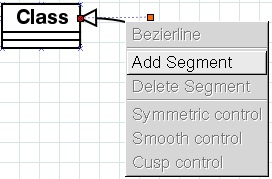
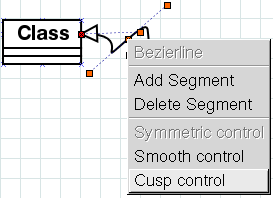
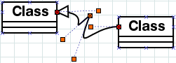
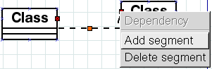
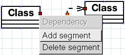
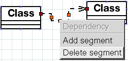

{kind=link}
A: The middle mouse button gives an object-specific menu. For zig-zag lines, poly lines and bezier lines, that menu allows you to add and remove bends.
  
A: As of version 0.93, zig-zag lines support a primitive form of autorouting that is intended to solve this problem and make it easier to make the diagrams look good. The autorouting algorithm does not attempt to avoid objects, but should at least make the lines go the right direction out from connection points. If it doesn't appear to work, double-click the zig-zag line and check that autorouting is on for it. This setting can also be accessed from the object menu.
For previous versions, here is a workaround for how to make zigzags change direction:
Using the object-specific menu on the middle mouse button, create an extra segment at each end of the line, then delete the middle segment:
- 

- 
- 

A: The size of classes is decided by their contents, especially the text. Note that you can scale the entire diagram when you print, see the question about page fitting.
A: We've been thinking about how to allow more connection points. Point is, there are several different ways it could be done that all make sense, and we'd like to get the most usable of them, while maintaining backwards compatibility. Note that the standard Line object allows you to add more connection points to it by the middle mouse menu. You can in a pinch place a line along the edge of an object and use the lines connection points:)
A: Neither X nor GTK has built-in support for rotating arbitrary shapes (text, ellipses etc). Work is being done on a Display Postscript interface that will allow arbitrary rotation. Work is also in progress on FreeType support, which would allow for rotation.
Having rotated text is only part of the problem. We also need infrastructure so that handles, connection points, bounding boxes etc are rotated along with the object. Help on this would be appreciated.
A: You can, for some objects. Adding connection points in general is a tricky problem, as it is difficult to make sure that the points keep their placement after a reload. The standard line object allows adding more points via the object menu.
A: Font support is not very standard in X, especially when you want to make images, print, and send the files to other people. In Dia version 0.90 and earlier, you can improve things by installing the urw-aliases package (or the GhostScript fonts). After installing the package, you will need to do a simple edit of a config file. Edit
/etc/X11/fs/config and move the line
/usr/share/fonts/default/urw-aliases to just below the
...:unscaled lines (make sure the commas are in the correct
places after making the change). Then run killall -USR1 xfs
to get the font server to reread its config file. The URW fonts should be
used in place of the adobe ones they are clones of when an unscaled bitmap
version can't be found.
As of 0.91, Dia on Unix uses the FreeType library to provide better font support. The fonts for this are in turn controlled by font-config. Note that this means that remote fonts servers cannot be used.
A: Dia 0.91 assumed things about Pango that weren't guaranteed, but didn't make a difference at the time. However, Pango 1.2.4 and up changed so that Dia's wrong assumptions now cause problems. This is fixed in Dia 0.92.1. Alternatively, if you can't install 0.92.1, you can downgrade your Pango to below 1.2.4. We highly recommend using the newest version of Dia, though. In Dia 0.92-0.94, we used a reworked cache which still didn't quite keep different sizes of the same text apart, so text would change size between huge, tiny and normal. In 0.95, the cache is disabled.